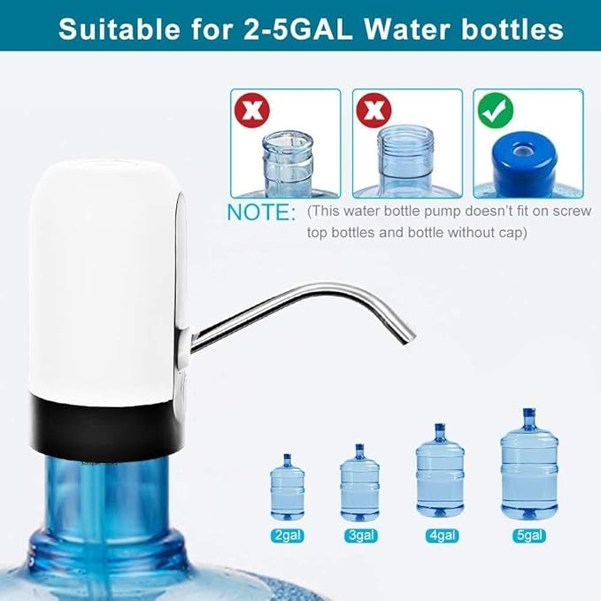

Automatic Wireless Water Can Dispenser Pump for 20 Litre Bottle Can

Price: ₹389
For latest discounts, please click on "Buy Now"
Why you should BUY!
The Automatic Wireless Water Can Dispenser Pump is a convenient and efficient solution for dispensing water from 20-litre bottles. It features a rechargeable battery, making it easy to use without the need for constant power supply. The pump is designed to fit most standard water cans and provides a smooth and consistent flow of water. It's perfect for home, office, or outdoor use, ensuring you always have access to clean drinking water with minimal effort. Upgrade your hydration experience with this reliable water dispenser pump.
Rating: ★★★★☆ (3.9/5)
How to USE
Using the Automatic Wireless Water Can Dispenser Pump is simple and straightforward:
- Charge the dispenser pump using the provided USB cable until fully charged.
- Attach the pump to the top of the 20-litre water bottle.
- Ensure the silicone tube is properly inserted into the water bottle.
- Press the power button on the top of the pump to start dispensing water.
- Press the power button again to stop the water flow.
- When the water flow slows down, recharge the pump as needed.
- Clean the pump and silicone tube regularly to maintain hygiene.
Enjoy easy and convenient access to clean drinking water with the Automatic Wireless Water Can Dispenser Pump!
Buy Now
Go Back